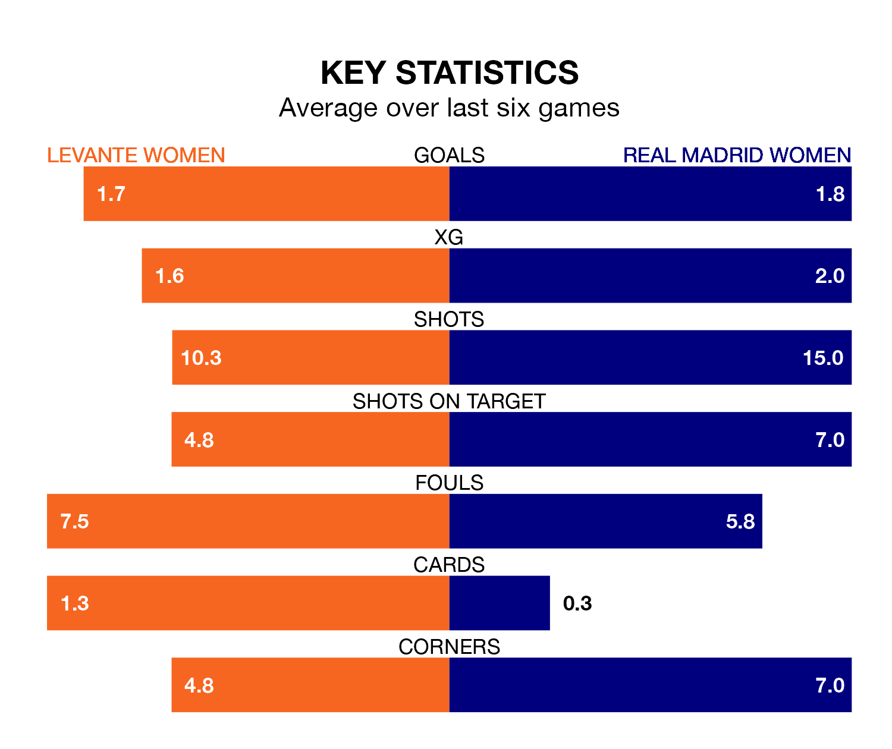

Two of Liga F's top sides face each other at Ciudad Deportiva de Buñol-Campo 1 in Saturday's early kick-off, when third-placed Levante Women host second-placed Real Madrid Women.
Levante have picked up 12 wins and eight draws from 23 games so far this season, and sit 11 points below the visitors going into the 11am match.
Madrid Women, meanwhile, have won 18 and drawn one, picking up 55 points.
With 58 goals in 23 games so far this season, Madrid Women are the league's second-highest scorers with 2.5 goals per game. And they are conceding fewer than average, letting in 25 goals at a rate of 1.1 per game.
Levante are also above average scorers, with 1.8 goals per game, compared to a league average of 1.6. They have conceded 0.8 goals per game.
With María Isabel Rodríguez Rivero between the sticks, the away team can rely on one of the league's safest pair of hands. She has kept eight clean sheets in her 21 appearances this season, and only one other 'keeper – Barcelona Women's Catalina Thomas Coll Lluch – has been able to prevent the opposition scoring on more occasions in Liga F.
In the hosts' net, Emma Holmgren has seven clean sheets in 14 games.
In the last 10 years, Levante and Madrid Women have played each other on seven occasions. They won three each, and they drew once.
On average, Levante scored 1.9 goals and Madrid Women 1.4 in those matches.
Their last meeting was on October 22, when Levante won 2-1 away.
Levante are in disappointing form in Liga F, with one win and three draws from their last six games.
With five wins and one loss over that period, Madrid Women's form is much better – they have taken 15 points from 18, compared to Levante's six.
Levante's last match was on Sunday, a 1-1 draw against Valencia Women, with Alba María Redondo Ferrer getting the goal for Levante.
Madrid Women beat Granada Women 5-0 last time out, also on Sunday, with Alba Pérez Manrique (own goal), Linda Lizeth Caicedo Alegría, Naomie Feller, Signe Kallesøe Bruun and Teresa Abelleira Dueñas on the scoresheet.
Updated: 15:40 (UTC), 18/04/24